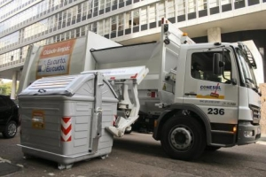
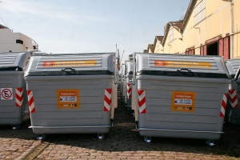

Sobre

A Coleta Automatizada de Resíduos Orgânicos e Rejeito em Porto Alegre iniciou em julho de 2011, com
a instalação de 1.200 contêineres em cinco bairros inteiros (Bom Fim, Centro Histórico, Cidade Baixa, Farroupilha e
Independência) e em partes de outros oito bairros (Azenha, Floresta, Menino Deus, Moinhos de Vento, Praia de Belas, Rio
Branco, Santana e Santa Cecília). Em julho de 2016, os 1.200 contêineres foram trocados por equipamentos novos.
Nos contêineres a população pode descartar resíduos orgânicos e o rejeito em qualquer dia e a qualquer momento (24 horas).
Entre janeiro e março de 2016, foi realizado o processo de duplicação do número de contêineres na cidade.
O que pode ser descartado nos contêineres

A coleta automatizada recebe apenas resíduos domiciliares, ou seja, resíduos orgânicos e rejeito. Os resíduos
recicláveis devem ser disponibilizados para a coleta seletiva atendendo os dias e horários do serviço. O descarte inadequado de
resíduos pode gerar multas que vão de R$ 328,50 a R$ 5.256,14.
Resíduos orgânicos - Todo resíduo de origem vegetal ou animal, ou seja, todo lixo originário de um ser vivo. Exemplos:
restos de alimentos como carnes, vegetais, frutos, cascas de ovos, restos de poda, ossos, sementes, erva-mate, borra de café
e chá, cinzas, restos de vegetação e galhos finos e dejetos de animais domésticos.
Rejeito - Papel higiênico, absorventes, fraldas descartáveis, cotonetes, espuma, etiquetas adesivas, esponjas, lã
de aço, tecidos de limpeza, porcelana, rolhas de cortiça.